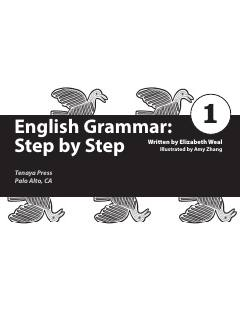

EGIngliz tili grammatikasini noldan boshlab bosqichma-bosqich o'rganish uchun qo'llanma.
Ushbu kitob ingliz tili grammatikasining eng tub asoslarini bosqichma-bosqich o'rganishga mo'ljallangan qo'llanmadir. Undagi tushunchalar sodda tilda bayon etilib, har bir mavzu amaliy mashqlar va javoblar kaliti bilan ta'minlangan.